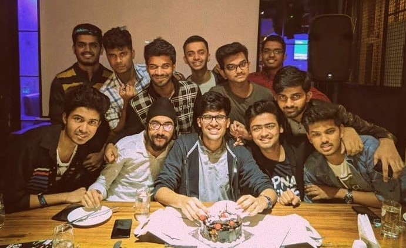
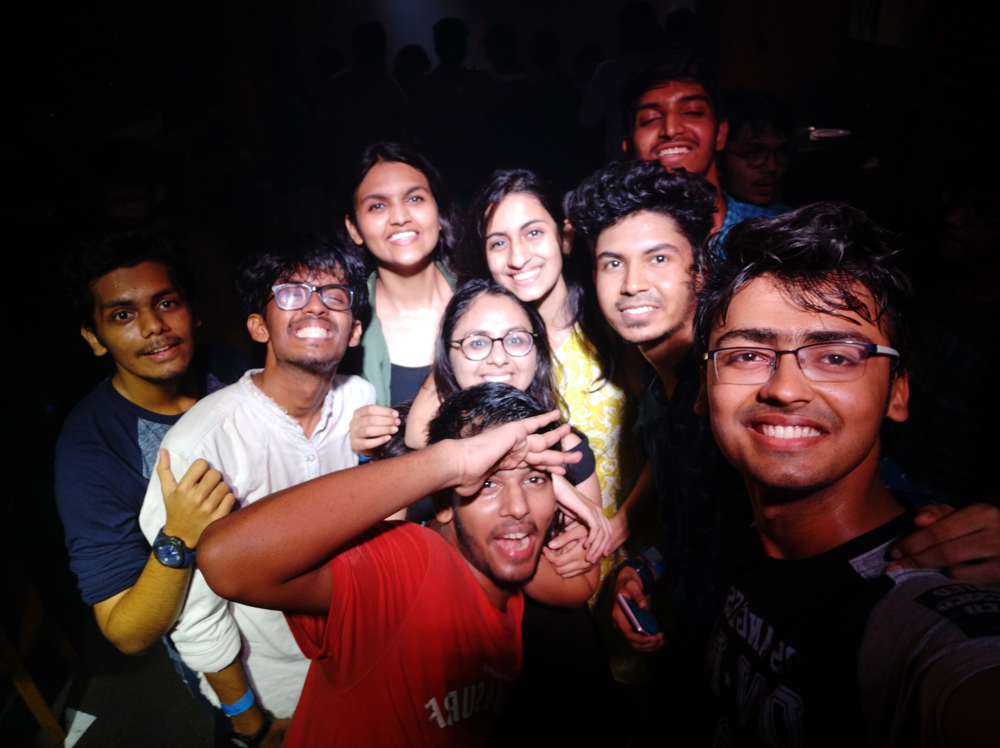
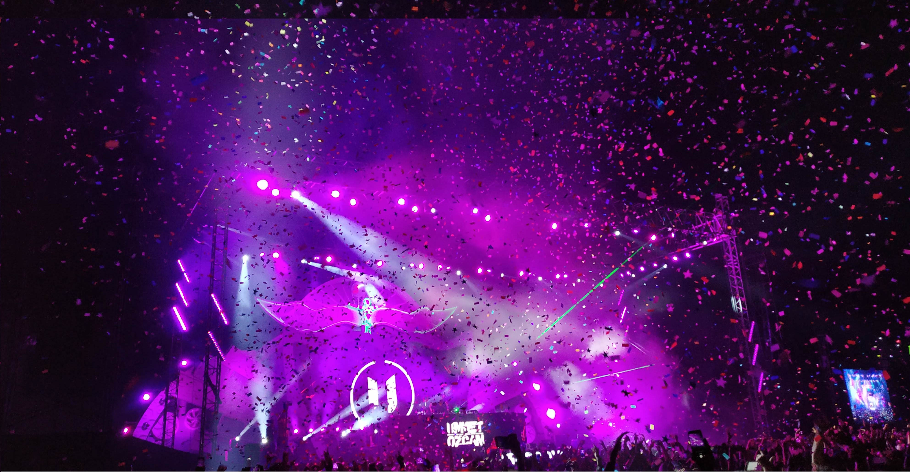

My journey at IIT Bombay began on 23rd of July 2018. To be honest I was at the top
of my world at that time. After a few months I got adjusted to the life here and I did enjoyed it to the fullest. Some of first friends were my wingies which are now kind of a family
I have in the campus. Also for the 1st year we had our loving senior Akhil Varma as our ISMP mentor who sorted out any problems we had regarding life in the campus.
The vibes of IITB are really amazing and the people I've met here are some of the
best ones I've met in my life. Apart from studies, we do a lot of fun activities which gets us involved with seniors and new people. Seniors in IITB are very much
supportive and helpful. We have treats ocassionally and hence the fun meter never gets low. The hangouts after the exams are worth cherishing. IITB has a lot of facilities
which lets you explore yourself. You can learn any skill if you want to. I learnt drumming, dancing and swimming to a decent level after coming here.
 Techfest and Mood Indigo are the colleges fests of IITB. If you have been in
any of these, you already know big they are. These fests allows us to interact with students of other colleges make new contacts. As organisers, coordinators of these fests
we get to meet many celebrities which is as fascinating as it sounds. The Afternites and concerts are the best events to visit which definitely creates
unforgettable memories! You know where to be if you want to experience the best college fests in India!